Header (App name, version, Help button)
- Version is shown in header (example:
v2.1.1). ?opens this help page.
Easy Bridge converts one incoming timecode source into up to three simultaneous outputs: Out LTC, Out MTC, and Out ArtNet.
This guide is organized by category. Text is on the left, image is on the right.
Important setup notes: If MIDI ports are missing, install python-rtmidi. On Windows LTC workflows, ASIO is used for devices like ReaRoute (Reaper). For Art-Net output, ensure UDP port 6454 is allowed by firewall.
v2.1.1).? opens this help page.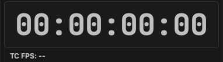
This category selects which protocol is currently used as the incoming timecode source.
Select active input protocol: LTC, MTC, Art-Net, or OSC.
Rows used when LTC is selected as the source.
Select LTC as the input timecode source.
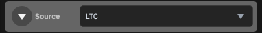
Chooses audio host API for LTC input.
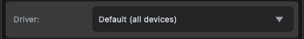
Selects input audio device carrying LTC signal.
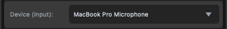
Selects channel used for LTC decode.
Sets decode sample rate; keep it matched with source setup.
Input level meter shows the strength of the LTC audio signal in real time. When the source is sending valid LTC, the green bar fills according to the input level.
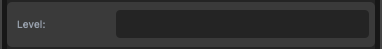
Slider to adjust the input gain in dB (typically from −24 to +24 dB). Use it to match the LTC source level so the decoder receives a stable signal.
0 dB). Double‑click the slider to reset to 0 dB.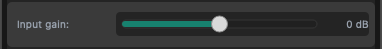
Rows used when MTC is selected as the source.
Choose MTC in source dropdown.
Select MIDI input port with incoming MTC.
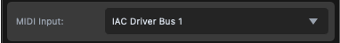
Rows used when Art-Net is selected as the source.
Choose Art-Net in source dropdown.
Select local network adapter for listening.
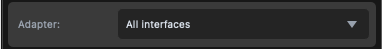
Set bind IP, usually 0.0.0.0 for all interfaces.
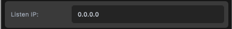
Rows used when OSC is selected as the source.
Choose OSC in source dropdown.
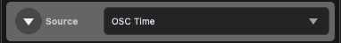
Select local adapter for OSC listener.
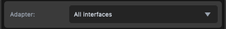
Set OSC bind IP address.
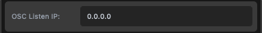
UDP port used for incoming OSC time messages.
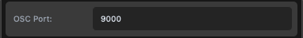
Frame-rate interpretation for incoming OSC values.
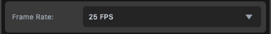
Address mapping for OSC time fields. The default examples are Reaper OSC commands, but for any other DAW you can find and assign equivalent OSC paths.
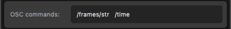
Rows that control LTC output transmission.
Enable LTC output stream.
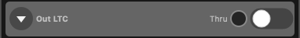
Chooses audio host API for LTC output.
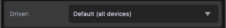
Select output audio device for LTC transmission.
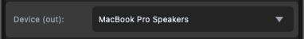
Selects channel used for LTC output.
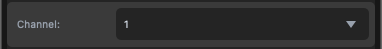
Sets output sample rate; keep it matched with the target device setup.
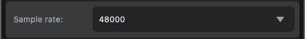
Frame offset compensation for LTC output.
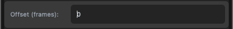
Output level control for the LTC audio signal.
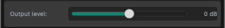
Rows that control MTC output transmission.
Enable MTC output stream.
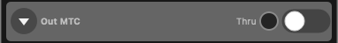
Select destination MIDI port for MTC transmission.
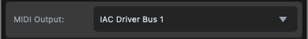
Frame offset compensation for MTC output.
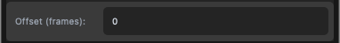
Rows that control Art-Net output transmission.
Enable Art-Net timecode output.
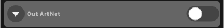
Select network interface for outgoing Art-Net packets.
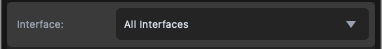
Set destination IP addresses (broadcast/unicast).
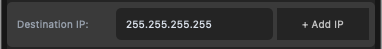
Frame offset compensation for Art-Net output.
Bottom area for runtime state and control buttons.
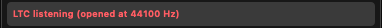
Clicking the status bar opens a details popup with real-time diagnostic values.
Input Timecode: currently received timecode.FPS: active frame-rate interpretation.LTC Output, MTC Output, ArtNet Output: per-output offset display.Processing Latency: internal processing delay in milliseconds and frames.
Clicking Settings opens a configuration menu popup. You can save the current setup to a config file, load a saved config file, and enable auto-load on startup.
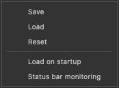
Settings opens configuration management. You can save the current setup to a config file, load a saved config file, and enable auto-load on startup. Quit closes the app safely.
Common status-bar messages and what they mean.
RUNNING - 24/25/29.97DF/30 FPS: valid timecode is currently received.STOPPED - no timecode: input is active but no valid timecode is currently detected.STOPPED - no MIDI input: no MIDI input port is selected/available for MTC input.STOPPED - invalid OSC port: OSC port value is not a valid integer.STOPPED - select LTC input: LTC source selected but no LTC input device chosen.STOPPED - LTC requires sounddevice+numpy: LTC modules are missing.STOPPED - ASIO driver failed to load (check x64 app + x64 ASIO/ReaRoute install): ASIO backend could not start.STOPPED - <error text>: runtime error returned by MIDI/LTC/OSC/Art-Net listeners.Tip: click the status bar to open the Status Details Window and inspect Input Timecode, FPS, output offsets, and processing latency.